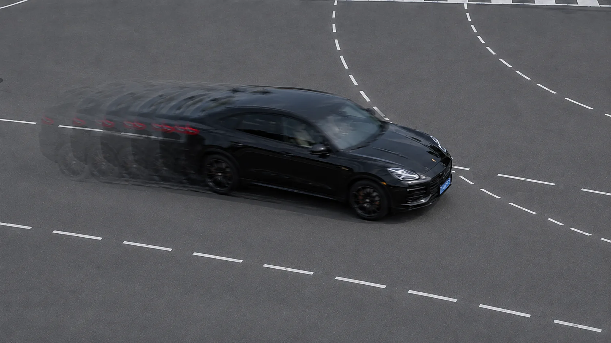
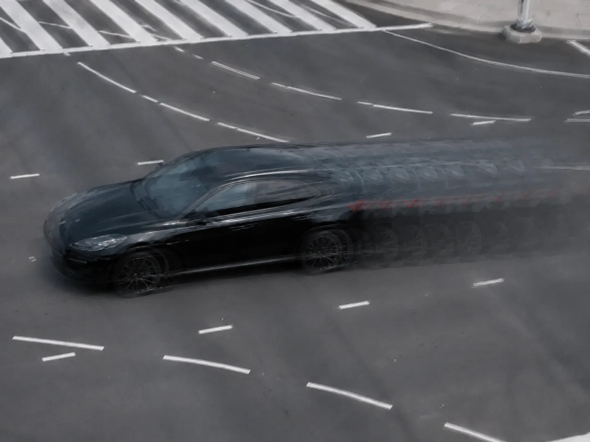
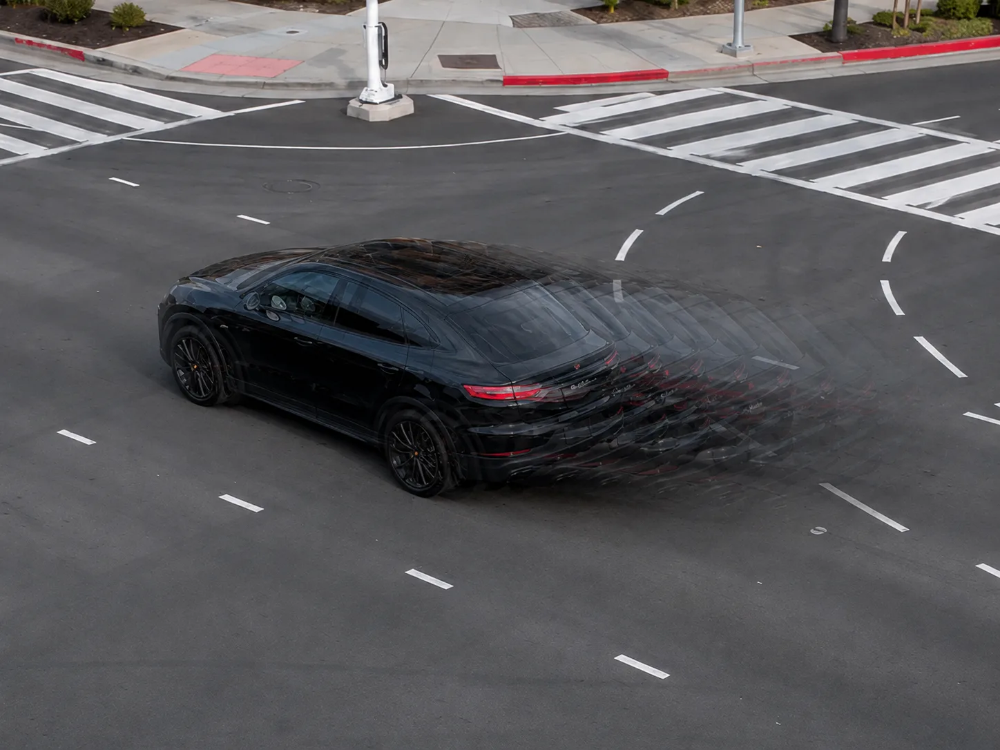
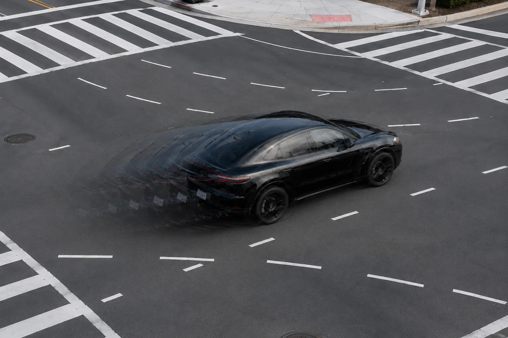
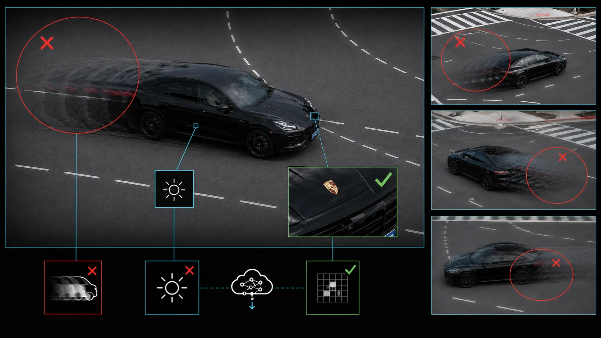
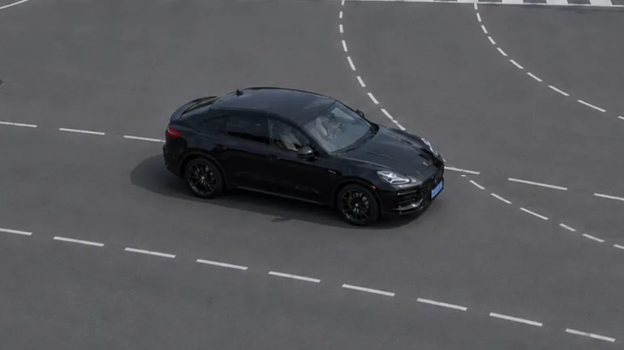
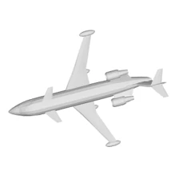
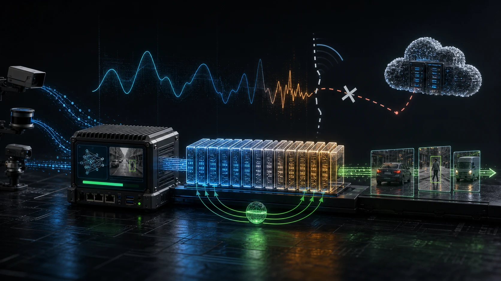

EDGE · 边缘侧
≈ 5 MB
筛选代表性漂移样本




四路摄像头只上传能代表当前漂移的无标签片段，减少无效数据传输。
01 / PROJECT FILM · 项目宣传片
宣传片以多路摄像头追踪同一车辆为主线，直观呈现边缘感知、漂移发现、云端知识蒸馏与 Adapter 下发恢复的完整过程。
02 / LIVE SYSTEM REPLAY · 系统回放
仓库记录的前台端到端时延约为 92–111 ms（含 Adapter 下发的网络仿真口径）；本页将异步流程扩展为 15 秒，仅为清晰展示漂移、调度、上行、蒸馏与恢复阶段，不代表系统真实执行耗时。
OFFICIAL TEST · 官方测试四视图来自 ModelNet40 官方测试样本 airplane_0627；暗光和噪声对应正式评测条件，运动模糊以多重残影实时生成，仅用于交互视觉演示。右侧百分比为 2,468 条测试轨迹的聚合准确率，不是单样本置信度。
CORE TECHNOLOGY / KNOWLEDGE DELIVERY · 核心技术 / 知识传递
边缘节点发现运动模糊、暗光等场景漂移后，从多路观测中筛选少量有代表性的无标签样本并上传。云端冻结 InternViT-6B 教师模型，用其特征与 Logits 为漂移样本生成监督，只训练约 0.3M 个 AdaptFormer 旁路参数；随后将约 1.2 MB 的 Adapter 包下发到边缘热加载。整个过程不传输 6B 教师模型，也不替换边缘主干与分类头，更新失败时可快速回滚，前台推理无需停机。




四路摄像头只上传能代表当前漂移的无标签片段，减少无效数据传输。

冻结的 InternViT-6B 教师分析残影、亮度和细粒度特征，用特征与 Logits 监督 Adapter 学习。

边缘仅替换轻量旁路参数，保留原有模型和业务链路，在不中断推理的情况下适应新场景。
03 / VERIFIED EVIDENCE · 指标证据

右图用于呈现干净参考与指标恢复；Adapter 修正识别能力，不执行图像去模糊或去噪。
Markov 断联模式 · 2,468 个时隙

含 Adapter 前台下发的网络仿真估计；TTFT 需按统一硬件与 batch=1 重测。
04 / TEAM & DELIVERY · 团队与交付
轻量感知、动态调度、弱网保障与冲突仲裁，共同构成可运行的端—边—云闭环。